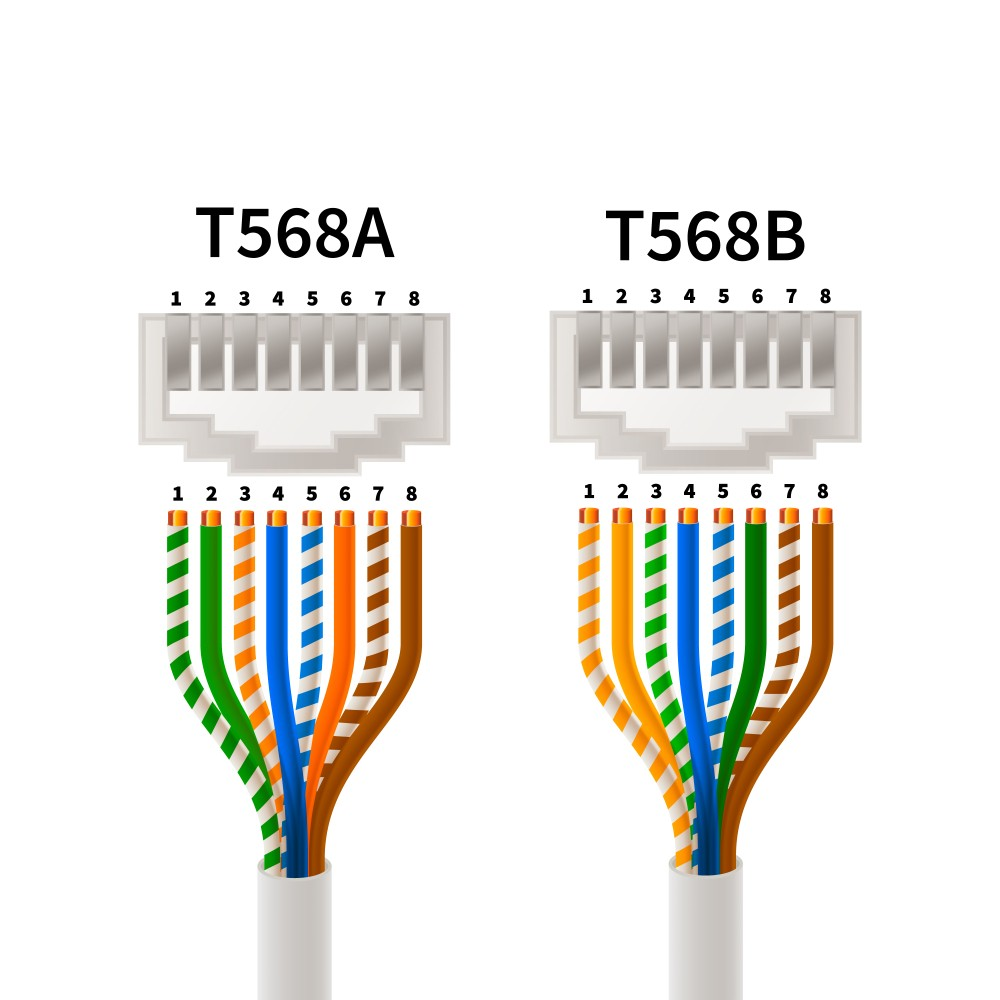
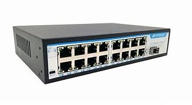
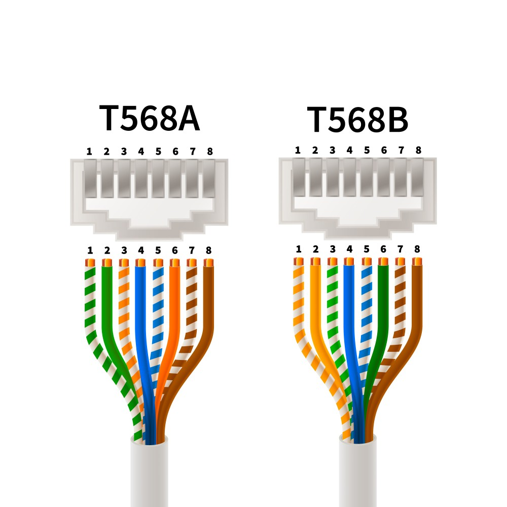
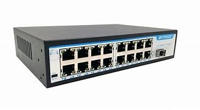
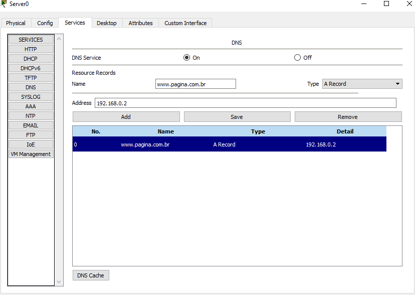
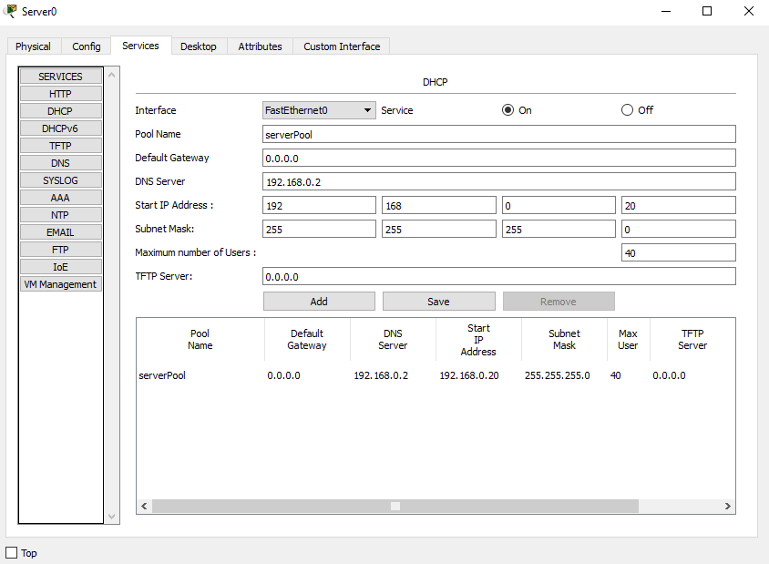
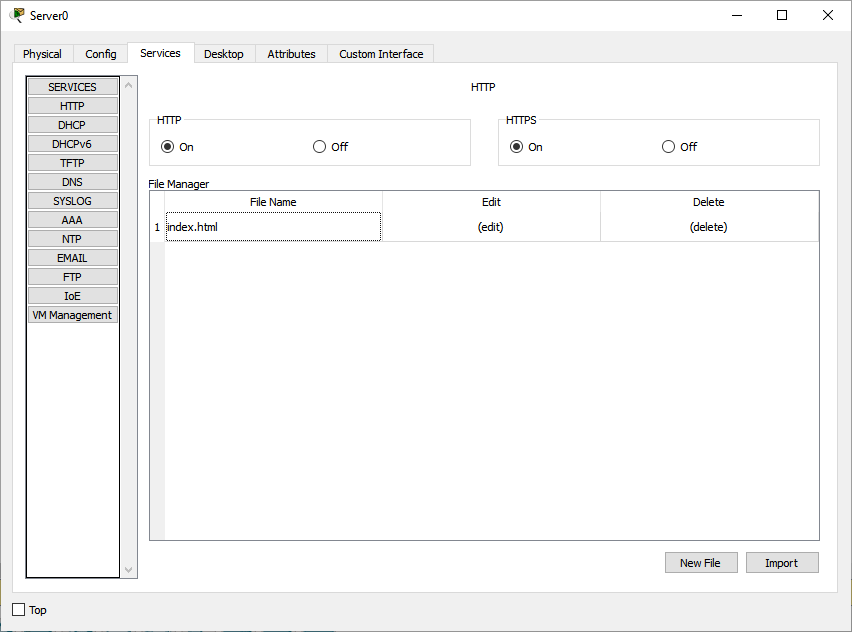

O que é uma rede de conexão?
Uma rede de conexão é um sistema de comunicação que permite a troca de dados entre dispositivos conectados por cabos, criando uma rede LAN, com servidores fora do mesmo local a partir da internet. Para que ela funcione corretamente sem que haja entrega de dados de forma incorreta entre os eletrônicos, os usuários da rede devem ser conectados num switch que direciona as mensagens para os destinos corretos. Além de ser um intermédio entre os usuários, ele conecta os mesmos com um servidor externo conectado que fornece os serviços desejados caso solicitado. Para a conexão de duas redes entre sí, é necessário um roteador que conecta as duas redes e direcione as mensagens para os switches que por sua vez irão direcionar as mensagens para os dispositivos conectados. Caso ainda haja dúvidas de como cada componente funciona, explicaremos com as próximas informações, lembrando que todos os dispositivos mostrados aqui podem ser comprados conosco, entre em contato caso nescessite mais informações.
Ao lado, uma demosntração de como é uma rede a partir de um esquema montado no software de estudo de redes Cisco Packet Traacer:
Como são os cabos que conectam a rede?
Os cabos utilizados são os de LAN (Local Area Network), onde são utilizados para conectar dispositivos em redes locais, permitindo a transmissão de dados entre computadores, impressoras, roteadores e outros equipamentos. Estes cabos possuem oito fios que funcionam como um sendo par de fios de dados e um sendo fios de alimentação normalmente, mas os cabos de alimentação também podem ser usados para telefonia e vídeo em certos casos. Os pares de fios são distinguídos pelo seus esquemas de cores, onde o par de dados é composto por fitas de cores sólidas padrões e os de alimentação/telefonia são compostos por pares de cores trançadas com o branco. A cripagem é o processo final para se compor um cabo de LAN funcional, onde se é cortado o cabo para que o mesmo fique no tamanho do conector RJ45 (conector padrão para conexões LAN) e os fios organizados conforme o esquema dependendo do tipo de entrada a ser utilizado (imagem para mais informações). Após isso, se é usado uma ferramenta especial para cripar o fio no conector, fazendo com que os "dentes de conexão" do conector encravem nos respectivos fios ordenados por sua cor, sendo então pronto para uso.

O que é um switch?
Um switch é um dispositivo de rede que conecta vários dispositivos em uma rede local (LAN) e permite a troca de dados entre eles. Ele é responsável por direcionar as mensagens para os dispositivos conectados de maneira correta, garantindo segurança, privacidade e direcionamento das mensagens. Além disso, o switch pode ser configurado para realizar tarefas adicionais, como a autenticação de usuários e a filtragem de tráfego de rede.

O que é um roteador?
Um roteador é um dispositivo de rede que conecta diferentes redes, permitindo a comunicação entre elas ao criar um acesso à Internet. Ele encaminha pacotes de dados, gerenciando o tráfego de informações entre dispositivos para identificar os receptores corretos dos dados enviados. Além disso, os roteadores podem fornecer funcionalidades como segurança e gerenciamento de rede.
O que é um Servidor?
Os cabos utilizados são os de LAN (Local Area Network), onde são utilizados para conectar dispositivos em redes locais, permitindo a transmissão de dados entre computadores, impressoras, roteadores e outros equipamentos. Estes cabos possuem oito fios que funcionam como um sendo par de fios de dados e um sendo fios de alimentação normalmente, mas os cabos de alimentação também podem ser usados para telefonia e vídeo em certos casos. Os pares de fios são distinguídos pelo seus esquemas de cores, onde o par de dados é composto por fitas de cores sólidas padrões e os de alimentação/telefonia são compostos por pares de cores trançadas com o branco. A cripagem é o processo final para se compor um cabo de LAN funcional, onde se é cortado o cabo para que o mesmo fique no tamanho do conector RJ45 (conector padrão para conexões LAN) e os fios organizados conforme o esquema dependendo do tipo de entrada a ser utilizado (imagem para mais informações). Após isso, se é usado uma ferramenta especial para cripar o fio no conector, fazendo com que os "dentes de conexão" do conector encravem nos respectivos fios ordenados por sua cor, sendo então pronto para uso.
Um switch é um dispositivo de rede que conecta vários dispositivos em uma rede local (LAN) e permite a troca de dados entre eles. Ele é responsável por direcionar as mensagens para os dispositivos conectados de maneira correta, garantindo segurança, privacidade e direcionamento das mensagens. Além disso, o switch pode ser configurado para realizar tarefas adicionais, como a autenticação de usuários e a filtragem de tráfego de rede.
Um roteador é um dispositivo de rede que conecta diferentes redes, permitindo a comunicação entre elas ao criar um acesso à Internet. Ele encaminha pacotes de dados, gerenciando o tráfego de informações entre dispositivos para identificar os receptores corretos dos dados enviados. Além disso, os roteadores podem fornecer funcionalidades como segurança e gerenciamento de rede.
Um servidor é um dispositivo, seja um computador, um software ou um hardware, que fornece serviços a outros dispositivos chamados clientes.
Aqui estão algumas maneiras de pensar sobre o que um servidor faz:
1. Armazenamento e compartilhamento:
Arquivos: Servidores armazenam arquivos como documentos, imagens, vídeos e programas, que podem ser acessados por clientes.
Banco de dados: Servidores armazenam grandes quantidades de dados organizados que podem ser pesquisados e recuperados por diferentes aplicativos.
2. Processamento:
Aplicativos: Servidores executam aplicativos e softwares, como sites, jogos e programas de e-mail, tornando-os acessíveis a clientes.
Processamento de dados: Servidores podem processar dados para análise, cálculos ou tarefas complexas.
3. Comunicação:
Rede: Servidores conectam dispositivos em uma rede, permitindo que eles se comuniquem entre si.
E-mail: Servidores de e-mail gerenciam o envio e recebimento de emails.
Exemplos de Servidores:
Servidor Web: Permite que você acesse páginas da web.
Servidor de email: Recebe e envia seus emails.
Servidor de banco de dados: Armazena dados usados por aplicativos.
Servidor de jogos: Permite que você jogue jogos online com outros jogadores.
Em resumo, o servidor, como o nome diz, é um componente que fornece serviços de rede para seus clientes que podem ser outros hardwares ou softwares conectados a ele. Esses servidores são essenciais para utilização de serviços online, já que funcionam como um intermédio do cliente com o seu serviço, seja de e-mail, jogos ou outra funcionalidade.
O que é IP?
O IP (Internet Protocol) é um protocolo de rede que permite que dispositivos sejam identificados e se comuniquem uns com os outros na Internet ou por LAN. Ele é utilizado como uma chave de busca em navegações web, pois computadores não conseguem ler os nomes dos links das página, necessitando então de um identificar numérico, no caso o IP. O IP é composto por quatro números separados por pontos, por exemplo: 192.168.1.1. Cada número pode variar de 0 a 255, pois em cada octeto de dado (os números separados por pontos) recebem 8 bytes de amrazenamento e por padrão bits somente podem ser 0 e 1, dois digitos, logo fazemos 2^8 que resulta em 256 combinações, descontando o 0, temos 255 combinações em cada octeto.
O que é TCP?
O TCP (Transmission Control Protocol) é um protocolo de rede que garante a entrega conf iável de dados entre dispositivos na Internet. Ele é utilizado para garantir que os dados se jam enviados e recebidos corretamente, sem erros ou perda de dados. Este tipo de protocólo é utilizado em aplicações que exigem confiabilidade, como transferência de arquivos confidenciais, transferências bancárias, mensagens entre corporações, etc.
Servidores disponíveis:
Temos alguns servidores disponíveis para compra e utilização, sendo estes: DHCP, HTTP e DNS.
Servidor DNS
Um servidor DNS (Domain Name System) é um componente fundamental da infraestrutura da internet que atua como um sistema de tradução de nomes de domínio em endereços IP. Quando você digita um endereço de site, como "www.exemplo.com", seu computador não consegue entender esse nome diretamente. Em vez disso, ele precisa do endereço IP correspondente, que é uma série de números que identifica de forma única um dispositivo na rede.
Aqui estão algumas funções principais de um servidor DNS:
- Resolução de Nomes: O servidor DNS converte nomes de domínio legíveis por humanos (como www.exemplo.com) em endereços IP (como 192.0.2.1). Isso permite que os navegadores acessem os sites desejados.
- Armazenamento de Registros: Os servidores DNS armazenam registros que contêm informações sobre os domínios, como registros A (que mapeiam nomes de domínio para endereços IP), registros MX (que indicam servidores de e-mail), entre outros.
- Distribuição de Carga: Em alguns casos, os servidores DNS podem distribuir o tráfego entre vários servidores, ajudando a balancear a carga e melhorar a eficiência.
- Cache: Para melhorar a velocidade e eficiência, os servidores DNS frequentemente armazenam em cache as respostas a consultas anteriores. Isso significa que se um endereço IP foi recentemente resolvido, o servidor pode fornecer essa informação rapidamente sem precisar consultar novamente a fonte original.
Em resumo, o servidor DNS é essencial para a navegação na internet, pois permite que os usuários acessem sites usando nomes amigáveis em vez de memorizar endereços IP numéricos.
Um exemplo do método de configuração utilizado pela empresa no programa Cisco Packet Tracer:
Servidor DHCP
Um servidor DHCP (Dynamic Host Configuration Protocol) é um serviço de rede que automatiza a atribuição de endereços IP e outras configurações de rede a dispositivos em uma rede. A principal função do servidor DHCP é facilitar a gestão dos endereços IP, permitindo que dispositivos se conectem à rede sem a necessidade de configuração manual.
Aqui estão algumas funções principais de um servidor DHCP:
- Atribuição Automática de Endereços IP: Quando um dispositivo (como um computador, smartphone ou impressora) se conecta à rede, ele envia uma solicitação para obter um endereço IP. O servidor DHCP responde a essa solicitação, atribuindo um endereço IP disponível da sua lista de endereços.
- Configuração de Outros Parâmetros de Rede: Além do endereço IP, o servidor DHCP também pode fornecer outras configurações importantes, como a máscara de sub-rede, o gateway padrão (roteador) e os servidores DNS. Essas informações são essenciais para que o dispositivo se comunique corretamente na rede e acesse a internet.
- Gerenciamento de Pool de Endereços: O servidor DHCP mantém um "pool" de endereços IP disponíveis. Quando um dispositivo se desconecta da rede, o endereço IP que estava em uso pode ser liberado e re-adicionado ao pool, tornando-o disponível para outros dispositivos.
- Reservas de Endereços IP: O servidor DHCP pode ser configurado para reservar endereços IP específicos para determinados dispositivos, com base em seu endereço MAC (Media Access Control). Isso é útil para dispositivos que precisam de um endereço IP fixo, como impressoras ou servidores.
- Renovação de Endereços IP: Os endereços IP atribuídos pelo servidor DHCP não são permanentes. Os dispositivos devem renovar seu endereço IP periodicamente, garantindo que o servidor tenha controle sobre a distribuição de endereços na rede.
Em resumo, um servidor DHCP simplifica a administração de redes, permitindo que dispositivos se conectem e obtenham as configurações necessárias de forma automática, sem a necessidade de configuração manual por parte do usuário. Isso ajuda a evitar conflitos de endereços IP e facilita a gestão de redes, especialmente em ambientes com muitos dispositivos.
Um exemplo do método de configuração utilizado pela empresa no programa Cisco Packet Tracer:
Servidor HTTP
Um servidor HTTP (Hypertext Transfer Protocol) é um software ou hardware que aceita e processa solicitações de clientes, geralmente navegadores web, para servir conteúdo da web. Ele é uma parte fundamental da arquitetura da internet, permitindo a comunicação entre clientes e servidores.
Aqui estão algumas funções principais de um servidor HTTP:
- Recepção de Solicitações: O servidor HTTP escuta as solicitações que chegam dos navegadores ou outros clientes. Quando um usuário digita um URL ou clica em um link, o navegador envia uma solicitação HTTP ao servidor correspondente.
- Processamento de Solicitações: Após receber a solicitação, o servidor HTTP processa o pedido. Isso pode envolver a recuperação de arquivos estáticos (como HTML, CSS, imagens) ou a execução de scripts (como PHP, Python, etc.) para gerar conteúdo dinâmico.
- Envio de Respostas: O servidor HTTP envia de volta uma resposta ao cliente. Essa resposta geralmente inclui um código de status HTTP (como 200 para sucesso, 404 para não encontrado, etc.), cabeçalhos que fornecem informações sobre a resposta e o corpo da mensagem, que pode conter o conteúdo solicitado, como uma página da web.
- Suporte a Protocolos: O servidor HTTP pode suportar diferentes versões do protocolo HTTP, como HTTP/1.1 e HTTP/2, que oferecem melhorias em eficiência e desempenho.
- Gerenciamento de Conexões: O servidor HTTP gerencia as conexões com os clientes, incluindo o controle de sessões e a manutenção de conexões persistentes para permitir múltiplas solicitações e respostas sem a necessidade de reestabelecer a conexão a cada vez.
- Segurança: Muitos servidores HTTP também oferecem suporte a HTTPS (HTTP Secure), que utiliza criptografia para proteger a comunicação entre o cliente e o servidor, garantindo a segurança dos dados transmitidos.
Em resumo, um servidor HTTP é essencial para a entrega de conteúdo na web, permitindo que os usuários acessem informações, interajam com aplicativos web e visualizem páginas da internet. Ele desempenha um papel crucial na experiência de navegação e na operação de sites e serviços online.
Um exemplo do método de configuração utilizado pela empresa no programa Cisco Packet Tracer:
O que é um servidor FTP (File Transfer Protocol)?
O servidor FTP é um servidor que tem a sua utilização igualmente a um carteiro, sendo o repsonsável de enviar e receber arquivos entre os dispositivos conectados na Internet.
Este servidor armazena informações de acesso, como usuários e senhas, sendo muito prático o acesso ao armazenamento de arquivos, algo que pode comprometer a segurança dos utilizadores.
As vantagens de sua utilização podem variar entre sua simplicidade de funcionamento e instalação, controle e eficiência em seu trabalho, porém suas desvantagens percorrem a probabilidade de vazamento de informações, pois não acompanha criptografia normalmente, sendo necessária sua implementação. Além disso, seus recursos funcionais são limitados e requer um profissional especializado gerenciando os servidores continuamente. Dentre vários outros motivos, sua utilização foi muito reduzida atualmente, levando as empresas a encontrar soluções mais modernas.
Mesmo com suas desvantagens, este tipo de servidor foi um dos mais utilizados no mercado mundial da tecnologia, garantindo um modo eficiente e rápido e porte econômico em comparação a outros modelos.
O que é armazenamento em nuvem?
O armazenamento em nuvem é como um conjunto de servidores interligados que oferecem diversos serviços online, incluindo armazenamento e compartilhamento de arquivos. Estes servidores ficam encarregados de armazenar grandes quantidades de informação entre si de maneira dinâmica, sem prejudiciar um ou outro.
Estes servidores são mais acessíveis que os de FTP, pois não requerem a instalação de software ou hardware, e podem ser acessados a partir de qualquer dispositivo conectado na internet por serem online, podendo abrir novos meios de compartilhamento de informações e dados entre usuários do mesmo serviço, facilitando o trabalho em equipe entre empresas e funcionarios.
Além disso, o armazenamento em nuvem oferece uma maior segurança e sincronização entre os dispositivos conectados com a mesma conta, sendo possível a recuperação de dados em caso de perda ou roubo de um dispositivo, e também a modificação dos mesmos em tempo real a qualquer lugar.
No entanto, essa funcionalidade em nuvem possuí algumas desvantagens, como a confidencialidade de seus dados, pois os servidores são propriedades de terceiros. Por serem diversos servidores interligados, o custo de implementação e uso destes servidores é consideravelmente mais alto do que servidores FTP, além de ser necessário a conexão com a Internet para sua utilização.
Comparação entre Nuvem e FTP:
Podemos concluir que a escolha entre esses dois tipos de servidores depende das necessidades específicas de cada empresa.
Historicamente, os servidores FTP se destacaram por sua simplicidade e eficiência em ambientes que requeriam uma conexão interna para o tráfego de dados, sendo ideais para transferências de arquivos que não demandavam segurança adicional. No entanto, a falta de criptografia e a necessidade de um gerenciamento especializado tornaram-se desvantagens significativas, especialmente em um cenário moderno onde a segurança da informação é crucial.
Atualmente, o armazenamento em nuvem oferece uma série de vantagens que superam as limitações do FTP, incluindo acessibilidade, maior segurança, e a capacidade de sincronização e recuperação de dados em tempo real. Essas características tornam a nuvem uma escolha preferencial para empresas que precisam compartilhar informações de forma segura e colaborativa. Embora o custo mais elevado e a dependência de uma conexão à Internet sejam fatores a serem considerados, os benefícios superam esses desafios.
Em suma, enquanto os servidores FTP podem ter sido adequados para operações internas e de baixo custo no passado, a evolução das necessidades de segurança e colaboração nas empresas modernas tornou a nuvem uma solução mais robusta e flexível. A decisão final deve considerar as prioridades de cada organização em termos de custo, segurança e funcionalidade, mas é evidente que a utilização de servidores FTP está se tornando cada vez menos comum no contexto atual.
O que é um servidor de e-mail?
Um servidor de e-mail é um sistema de servidores que gerencia o envio, recebimento e armazenamento de mensagens de e-mail. Ele desempenha um papel fundamental na comunicação eletrônica, permitindo que os usuários troquem mensagens de forma eficiente e segura.
Estes servidores possuem alguns componentes essenciais para sua utilização, dentre eles, podemos ressaltar:
Servidor SMTP (Simple Mail Transfer Protocol): O SMTP é o protocolo padrão para envio de e-mails. Ele é responsável por transferir mensagens de e-mail de um cliente de e-mail (como Outlook, Thunderbird ou um aplicativo web) para um servidor de e-mail e entre servidores de e-mail. Quando você envia um e-mail, o cliente de e-mail se conecta ao servidor SMTP do provedor de e-mail. O SMTP então processa a mensagem, determina o endereço do servidor de e-mail do destinatário e a encaminha para esse servidor. Se o servidor de destino não estiver disponível, o servidor SMTP pode armazenar a mensagem e tentar reenviá-la mais tarde.
-
Servidor POP3 (Post Office Protocol): O POP3 é um protocolo utilizado para receber e baixar e-mails de um servidor para um cliente de e-mail. Ele é projetado para permitir que os usuários acessem suas mensagens offline. Quando um usuário se conecta ao servidor de e-mail usando o POP3, o protocolo baixa todas as mensagens da caixa de entrada do servidor para o dispositivo do usuário e, geralmente, as remove do servidor. Isso significa que, após o download, as mensagens não ficam mais disponíveis no servidor, a menos que o cliente de e-mail esteja configurado para deixar uma cópia no servidor.
-
Servidor IMAP (Internet Message Access Protocol): O IMAP é um protocolo também utilizado para receber e gerenciar e-mails, mas com uma abordagem diferente do POP3. Ele permite que os usuários acessem suas mensagens diretamente no servidor, mantendo-as sincronizadas em vários dispositivos. Quando um usuário se conecta ao servidor de e-mail usando o IMAP, as mensagens permanecem no servidor e são exibidas no cliente de e-mail. O IMAP permite que o usuário visualize, organize e gerencie seus e-mails sem precisar baixá-los, embora também permita o download de mensagens, se desejado.
Estes componentes utilizam portas específicas para cada uma de suas funções para que não haja estrangerismo entre os servidores comunicadores, sendo o servidor SMTP o utilizador da porta 25 (ou 587 para conexões seguras), o servidor POP3 a porta 110 (ou 995 para conexões seguras) e o IMAP a porta 143 (ou 993 para conexões seguras) dentro dos servidores físicos de e-mail.
O que é um modelo OSI?
O modelo OSI (Open Systems Interconnection) é uma estrutura de sete camadas que descreve como os dispositivos de rede se comunicam entre si. Foi desenvolvido pela Organização Internacional para Padronização (ISO) em 1984 e é amplamente utilizado para facilitar a interoperabilidade entre diferentes sistemas de redes e para ajudar na compreensão do funcionamento das redes de computadores. Cada camada tem uma função específica e trabalha em conjunto com as camadas adjacentes para garantir a comunicação eficaz entre os dispositivos. Aqui estão as sete camadas do modelo OSI:
-
Camada 1: Física - A camada física é a camada mais baixa e lida com a transmissão real dos dados através de meios físicos, como cabos, fibras ópticas e ondas de rádio. Ela define as características elétricas, mecânicas e funcionais do meio de transmissão.
-
Camada 2: Enlace de Dados - A camada de enlace de dados lida com a comunicação entre dispositivos na mesma rede local. Ela é responsável pela detecção e correção de erros que podem ocorrer na camada física, além de controlar o acesso ao meio físico de transmissão.
-
Camada 3: Redes - Esta camada é responsável pelo roteamento dos pacotes de dados entre diferentes redes. Ela determina o melhor caminho para os dados através da rede, usando endereçamento lógico (como endereços IP).
-
Camada 4: Transporte - A camada de transporte é responsável pela transferência de dados entre sistemas finais. Ela garante a entrega correta e em ordem dos pacotes de dados, podendo incluir controle de fluxo e correção de erros. Protocolos como TCP (Transmission Control Protocol) e UDP (User Datagram Protocol) operam nesta camada.
-
Camada 5: Sessão - Esta camada gerencia as sessões de comunicação entre os sistemas. Ela estabelece, mantém e encerra conexões entre aplicações, garantindo que a comunicação ocorra de forma ordenada.
-
Camada 6: Apresentação - A camada de apresentação é responsável pela formatação e tradução dos dados. Ela pode realizar funções como compressão de dados, criptografia e conversão de formatos (por exemplo, de texto para binário).
-
Camada 7: Aplicação - Esta camada é onde os aplicativos e serviços de rede interagem com o usuário final. Ela fornece serviços de rede diretamente para as aplicações, como email, transferência de arquivos e navegação na web.
Em resumo, o modelo OSI é uma ferramenta importante para entender e projetar redes de computadores, pois fornece uma maneira de descrever como os diferentes componentes de uma rede interagem. Embora na prática muitos protocolos de rede não sigam estritamente o modelo OSI, ele ainda é amplamente utilizado como um guia conceitual.